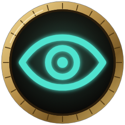

Quest map & trackerClairvoyance
Quest map & tracker
Find every quest objective without leaving the game.
See exactly where each of your quests needs you, on the map, the minimap and a compass at the top of your screen. Every quest gets its own colour, and you'll see which new quests you can pick up nearby.
- Never hunt for an objective againevery quest marked on your map, minimap and compass
- Find anything nearbyflight masters, mailboxes, herbs, ore and rare creatures, in one click
- Only quests you can actually takeno more walking to a quest giver who has nothing for you
- Quest with friendssee your party's progress, even friends who use Questie
It never tells you which quest to do next. You choose your own path.